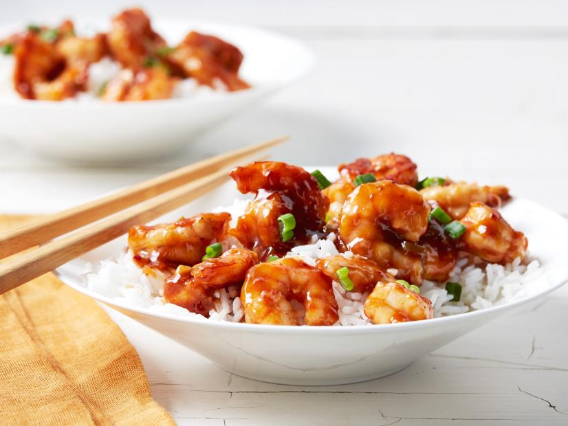

Sweet and Sour Glazed Shrimp

Description
It may be tempting to pick up a take-out menu, but making a homemade stir-fry is a lot easier than you think.
This wok-fired sweet and sour shrimp dish will satisfy all savory, sweet, and tangy cravings.
Succulent shrimp paired with crisp bell peppers, tender zucchini, and tropical pineapple makes for a colorful presentation.
At the end of a busy day, treat yourself to a restaurant quality home cooked meal that’s a breeze to prepare!
- 1/4 cup Chinese plum sauce
- 1/4 cup ketchup
- 2 teaspoons soy sauce
- 1/4 teaspoon crushed red pepper flakes
- 1 1/4 pounds medium shrimp, peeled and deveined and tails removed
- Kosher salt and freshly ground black pepper
- 1 tablespoon peanut oil
- 2 scallions, thinly sliced (white and green parts kept separate)
- 1 clove garlic, finely chopped
- 1 teaspoon finely chopped peeled fresh ginger
- 3 tablespoons unseasoned rice wine vinegar
- Cooked white rice, for serving, optional
- Stir together the plum sauce, ketchup, soy sauce, and pepper flakes in a small bowl and set aside.
- Sprinkle the shrimp with salt and pepper. Heat the oil in a medium skillet over medium-high heat.
Add the shrimp to the skillet and cook, stirring occasionally, until just cooked through, 2 to 3 minutes.
Transfer to a plate.
- Add the scallion whites, garlic and ginger to the skillet and cook, stirring constantly, until soft, about 1 minute.
- Add the vinegar and scrape up any brown bits that cling to the bottom of the skillet. Add the plum-ketchup sauce and bring to a simmer.
Return the shrimp to the skillet along with the scallion greens and give the skillet a swirl to bring everything together.
- Divide among 4 plates and serve with white rice if using.